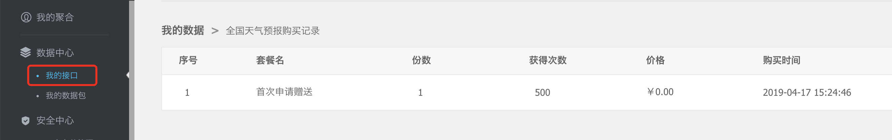
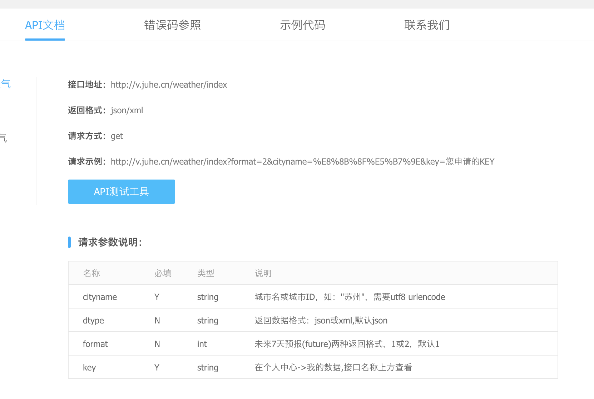
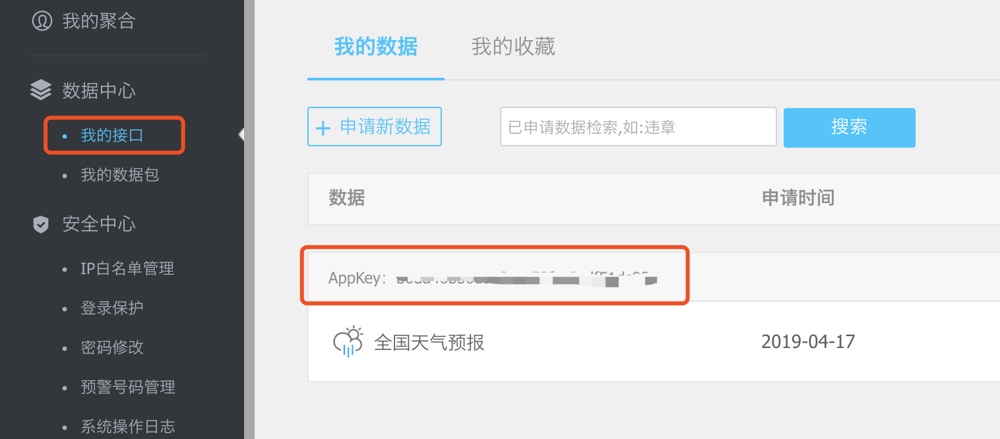
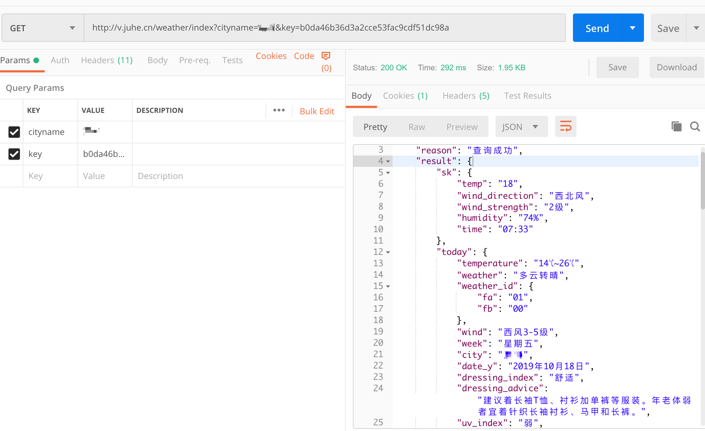
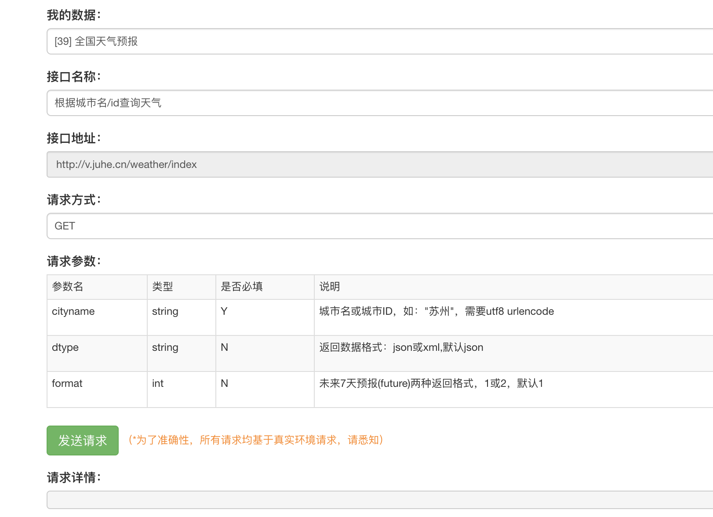
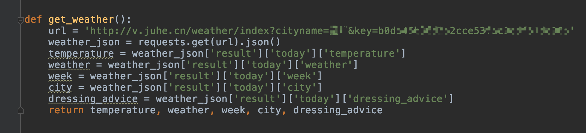
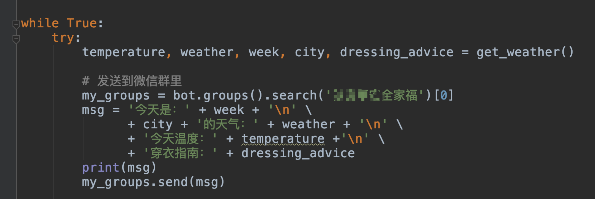
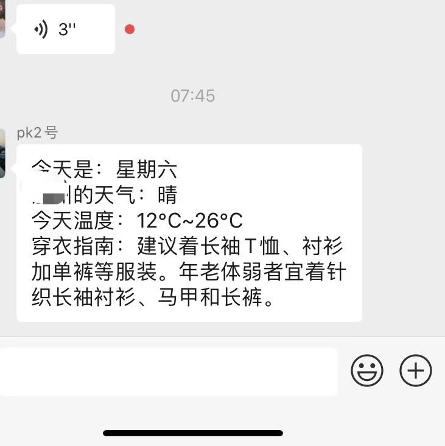
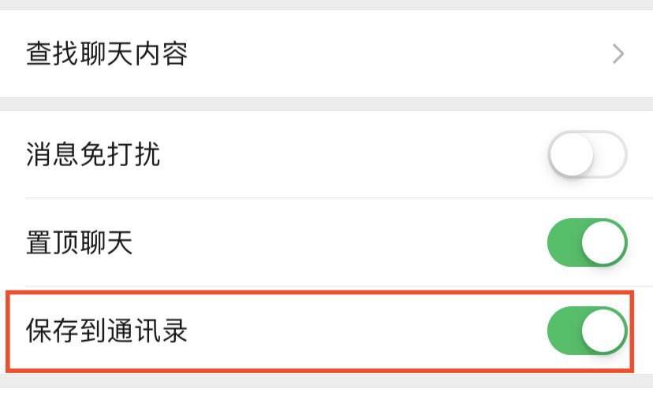

原文连接:https://www.cnblogs.com/pythoncircle/p/11717706.html
背景
最近天气变冷了，和父母聊天中得知，他们查看每天的天气预报不太方便，我记得小时候，每晚 19:30 左右，一家人都要守在电视机旁边收听第二天的天气情况。
如今，对于我们年轻人来说，获取天气情况很方便，但是对于我们不擅长用手机的父母来说，还是很吃力，他们用的多的还是微信吧。为此，我用不到 40 行代码写了一个小工具，每天定时把当天的天气情况直接发到微信群里。
查询天气接口
要获取天气情况，需要一个查询天气的接口，网上找了一下，一般都是注册后送一定调用次数的，我选择了一个，免费送 500 次查询次数的。

我们看看接口的 API 文档。

其中城市名 cityname 和 key 是必填项。
http://v.juhe.cn/weather/index?format=2&cityname=%E8%8B%8F%E5%B7%9E&key=您申请的KEYkey 值在 juhe.cn 我的接口那一栏中可以看到。

我们也可以事先在 Postman 工具中看看接口能否调通。

Postman 接口工具没用过的没关系，他们网页上也提供了调试工具。

查询天气方法
我们直接用 requests 库请求接口就能获得 json 格式的天气信息，json 数据中包含了当天和未来几天的天气信息，这里我只需要当天的，当天数据都在 result 下的 today 里，提取出来用 return 返回。

通过微信发送天气消息
我们通过微信把天气信息发到群里，这里我们需要用到调用微信的库，itchat 库或者 wxpy 都可以，这里我用了 wxpy 库。
先导入 wxpy 库。
from wxpy import *我们把刚才的请求接口返回的天气信息整合一下，然后用 wxpy 库的 search 方法通过群名称找到你需要发送天气消息的这个群，用 send 方法发送。

我这里是发送到群里，当然，你也可以直接发送给个人微信。
my_friend = bot.friends().search(u'pk哥')[0]定时操作
如果每次都需要我们手动运行，那就有点麻烦，我们要让程序每天在固定时间定时发送，这里需要用到 Timer 定时器。
Timer 定时器格式：
Timer(86400, get_weather）第一个参数表示相隔指定时间（单位：秒）后再次调用方法（第二个参数），注意，方法后不要带括号。
86400 秒就是相隔 24 小时，也就是一天的时间。
t = Timer(86400, get_weather)
t.start()
t.join()异常处理
如果信息发送失败，我们把信息发给自己，这里我做了一个异常处理。
except BaseException:
my_friend = bot.friends().search(u'brucepk')[
0] # 发送不成功，则发送消息给自己，提醒消息发送失败
my_friend.send(u'天气消息发送失败')我们的程序需要持续运行，那是不是需要一直在电脑上运行啊，这样有点不现实啊，我们把它部署到服务器上就可以搞定了，现在服务器也很便宜，做活动的时候一般 100 元以内就可以买一年。
部署在服务器
在服务器中运行程序，直接扫码登录微信，下面是我周五开始运行的，相隔 24 小时后，周六再次调用方法，获取新的天气信息。

发到群里效果如下图，当然，你还可以多加一些接口返回的信息或者自己想说的话。

可能存在的问题
1、我的微信登录不了网页版微信
因为 itchat 库和 wxpy 库都是调用微信的网页版接口，如果你的微信注册比较晚，被限制了网页版登录功能，那这个程序你无法运行。
2、发送不到指定群
先检查下群名称，把群名称一些 emoji 表情符号去掉，这些特殊符号可能导致无法识别。
群名称没错的话，看看自动发送信息的这个号有没有把这个群添加到通讯录。

这样，一个定时发送消息的小工具就完成了，你也可以在上面扩展，加上其他功能，这样就更完善了。
本文全部源码在公众号「Python 知识圈」后台回复「天气小工具」获取，源码中 key 值和群名称需换成自己的。